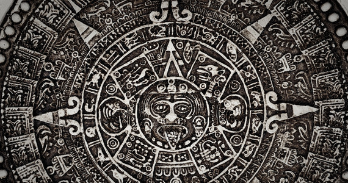

Początek świata
Z mitologicznego i astronomicznego punktu widzenia opis pierwszego świtu według Majów Quiché obejmował pojawienie się słońca, księżyca oraz gwiazd. Pierwsi stworzeni ludzie zapoczątkowali cztery rodu Quiché: Jaguar Quitze, Noc Jaguara, Nie teraz, Ciemny
Jaguar. Przepełniła ich radość, kiedy dostrzegli Wenus - przewoźniczkę słońca - która wschodziła przed nim. Odpakowali wówczas trzy rodzaje cennego żywicznego pachnidła i spalili je w kierunku wschodnim, czyli w kierunku wschodzącego słońca.
W miarę jak dym wił się ku niebu, łkali z radości, oczekując bliskiego świtu. Kiedy słońce wzeszło, zwierzęta świata zgromadziły się na szczytach gór, patrząc ku wschodowi. Wszystkich przepełniała radość, gdy słońce pojawiło się na niebie.
Jako pierwsza wydała okrzyk papuga, potem orzeł, sęp, jaguar i puma. Słońce, grzejąc coraz silniej, wysuszyło jednak powierzchnię ziemi, a pierwsze zwierzęta przemieniło w skały. Według Majów, gdyby te pierwsze jaguary, pumy, czy grzechotniki
nie zostały wypalone przez słońce, dzisiejsi ludzie nie mieliby chwili wytchnienia od niebezpiecznych zwierząt. A samo słońce po owym pierwszym świcie zostawiło tylko swoje odbicie - dzisiejsze widoczne słońce jest zaledwie jego odblaskiem
w błyszczącej tarczy.
